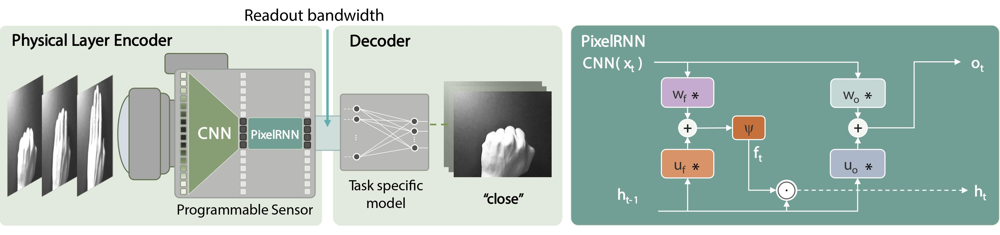

PixelRNN: In-pixel Recurrent Neural Networks for End-to-end-optimized Perception with Neural Sensors
Haley M. So 1, Laurie Bose 2, Piotr Dudek 2, Gordon Wetzstein 1
1 Stanford University 2 The University of Manchester
Abstract:
Conventional image sensors digitize high-resolution images at fast frame rates, producing a large amount of data that needs to be transmitted off the sensor for further processing. This is challenging for perception systems operating on edge devices, because communication is power inefficient and induces latency. Fueled by innovations in stacked image sensor fabrication, emerging sensor—processors offer programmability and minimal processing capabilities directly on the sensor. We exploit these capabilities by developing an efficient recurrent neural network architecture, PixelRNN, that encodes spatio-temporal features on the sensor using purely binary operations. PixelRNN reduces the amount of data to be transmitted off the sensor by factors up to 256 compared to the raw sensor data while offering competitive accuracy for hand gesture recognition and lip reading tasks. We experimentally validate PixelRNN using a prototype implementation on the SCAMP-5 sensor—processor platform.
Overview:
The perception pipeline of PixelRNN can be broken down into an in-pixel encoder and a task-specific decoder. On the left is the camera equipped with a sensor—processor, which offers processing and memory at the pixel level. The captured light is directly processed by a CNN that extracts spatial features, which are further processed by a convolutional recurrent neural network with built-in memory and temporal feature extraction. Here we show our PixelRNN variant on the right, * being the convolution operator, ⊙the element-wise multiplication, and Ψ a nonlinear function. Instead of sending out full 256 x 256 values at every time step, our encoder outputs 64 x 64 once every 16 time steps. While we show this pipeline for hand gesture recognition, the decoder can be designed for any perception task.
Prototype on SCAMP-5 Vision Sensor
We utilize the emerging class of sensor—processors to prototype the in-pixel RNN. The platform we use is the SCAMP-5 vision sensor.
The input image is downsampled, duplicated, and binarized. Stored convolutional weights perform 16 convolutions, to produce 16 feature maps in the 4 x 4 grid of processor elements. A ReLU activation is applied, followed by max-pooling, downsampling, and binarization. This can either be fed to another CNN layer or to the input of the RNN. The RNN takes in the output of the CNN and the previous hidden state ht-1. The hidden state ht is updated every timestep. The output ot is read out every 16 frames, yielding 256x decrease in bandwidth.
BibTeX:
@inproceedings{hmso2024pixelrnn,
title={PixelRNN: In-pixel Recurrent Neural Networks for End-to-end-optimized Perception with Neural Sensors},
author={Haley M. So and Laurie Bose and Piotr Dudek and Gordon Wetzstein},
booktitle={CVPR},
month={June},
year={2024},
pages={25233-25244},
}